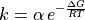

application module¶
Application class for Cortix.
Cortix: a program for system-level modules coupling, execution, and analysis.
Valmor F. de Almeida dealmeidav@ornl.gov; vfda Tue Dec 10 11:21:30 EDT 2013
-
class
application.Application(app_work_dir=None, app_config_node=<cortix.src.utils.configtree.ConfigTree object>)[source]¶ Bases:
objectAn Application is a singleton class composed of Module objects, and Network objects; the latter involve Module objects in various combinations. Each combination is assigned to a Network object.
-
networks¶ list(str) – List of names of network objects.
-
network¶ Network – Network object.
-
modules¶ list(str) – List of names of Cortix Module objects.
-
module¶ Module – Cortix Module object.
Note
Add type annotation to all methods?
Here is some math:

-